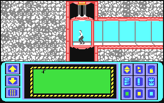
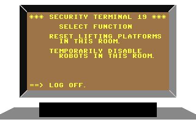
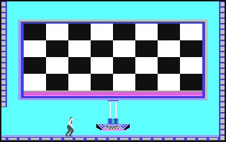
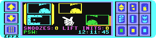
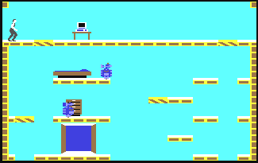
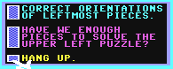

MANUAL
1. SUBJECT: Mission of vital importance to national and global security. Operations to begin immediately. Utmost urgency.
2. SITUATION: During the past three days, key military computer installations of every major world power have reported security failures. In each case, someone gained access to a primary missile attack computer.
Only one person is capable of computer tampering on this scale... Professor Elvin Atombender (hereafter referred to as "Elvin")
We believe that Elvin is working to break the computers' launch codes. When he succeeds, he plans to trigger a missile attack that will destroy the world.
3. MISSION: You must penetrate Elvin's underground stonghold and stop him. To succeed you will have evade the scientist's robot guards, break his security code and find his control center. Your predecessors, agents 4116 and 4124 (may they rest in peace), were able to send back some information about Elvin's installation. It is detailed in the following pages.
Your only weapons will be your keen analytical mind and your M1A9366b pocket computer. Good luck. The world is depending on you.
ELVIN'S STRONGHOLD
Using a fortune he amassed by raiding the computer systems of various financial institutions, Elvin constructed a vast, underground stonghold packed with computer equipment. There, in seclusion, Elvin spent four years working to breach the security of military computer installations around the world. As you know, he has succeeded.
Our computers estimate that he will break the launch codes and trigger the missile attack in exactly six hours. This is the amount of time you will have to complete your mission.
Elvin's stronghold consists of 32 rooms in which each room can be accessed by an elevator or through lifts in each room.

ELVIN'S SECURITY SYSTEM
Our intelligence indicates that Elvin uses three types of codes (or passwords) in his security sustem. One code deactivates the robots, another operates the lifts and the third code (a password) unlocks the control room.
Now comes the really strange part:
We believe that Elvin hides the passwords in his furniture.
Elvin, who is extremely absent-minded, frequently forgets the passwords for his security computer. His solution is to scatter them haphazardly around the house.
Whine, but you must find them. Without the passwords, you will almost certainly end up like agent 4124 (but we don't want to think about that, do we?)
Once you find the codes, using them should be relatively easy (for the most part). You should be able to log onto a security terminal as you enter each room and deactivate the robots or reset the lifts (if necessary) from there.
Note: You can reset lifting platforms depending upon how many "init lift" passwords you have or find. This should present no problems.
Note: You can deactivate the robots with a "snooze" password (temporarily) in that room. When you find one it shows the picture of a robot with a series of zzzzzz's... or you can check your status while standing in the elvator and pressing button 0 or 1.
Extreme Note! : However, the control room password is another matter. Realizing the importance of this particular code, Elvin has broken it into dozens of pieces, scattering them throughout the complex. You will have to find and retrieve all of the pieces and match them up like a puzzle to form a password. (objective of game)
With the completed password, you can gain access to the control room where Elvin is preparing to launch the missiles. You have to stop him, or the world is going to be terminally late for dinner tonight. (all gone)
OVERVIEW OF OBJECTIVE
Idea is to run about room avoiding robots and holes (on bottom floor) and try to find the pieces of the puzzle to solve.
CONTROLS
In the elevator: push the joystick forward or back to go up or down. Push the joystick left or right to move in either direction along the corridor. Running to the edge of the screen takes you into a room. (this is the place where you start in the beginning) also-> this is where you use your buttons to view your status or use equipment which will be explained later on.
In the rooms: push the joystick left or right to move in either direction. If you press the fire button, your agent will perform a mid-air forward flip that you won't believe (this is especially useful for somersaulting over pesky robots and gaps in the floor).
On lifting platforms: if you're standing on a striped lifting platform (b&w 1 inch block) in one of the rooms, you can push the joystick forward or backward to go up or down (to its limits, of course).
GAME PLAY
As you explore Elvin's stronghold, your pocket computer (at the bottom of the elevator screen) will display a map of the rooms and tunnels you have entered. In every room, you should conduct a search.
SEARCHING FOR CODES
Search every object or piece of furniture in the rooms for codes and password puzzle pieces (if you can avoid the robots). You can do this by standing directly in front of an object (sofa, desk, fireplace or whatever) and pushing the joystick forward.
The word "Searching" will appear in a box at the top of the screen. You will also see a horizontal bar indicating the length of time it will take to search the object. You must continue holding the joystick forward until the bar disappears.
Resume searching where you left off. But if you leave the room, you'll have to start the search from the beginning.
When you have finished searching the object, one of four things will replace the words "searching" at the top of the screen:
The words "Nothing here." (then the object disappears)
A picture of a striped lifting platform with an arrow above it. This represents a lift init password which alows you to reset all of the lifting platforms to their original positions (not elevators)
A picture of a sleeping robot. This represents a snooze password which allows you to temporarily deactivate the robots in a room.
A puzzle piece. This is part of the password which allows entry to the control room. It will be entered into the memory of your pocket computer automatically.
USING SECURITY TERMINALS
Use can use the snoozes and lift inits at any security terminal. These terminals are usually located near the entrance to each room. They look like television sets with darkened screens facing toward you. (actually it look like facing an apple w/a monitor which is off (it's on a stand)
To use a security terminal, move directly in front of it and push the joystick forward. The screen of the security terminal will enlarge to fill your display. You can select one of three functions with the joystick (press button when the arrow points to the function you want):

Reset lifting platforms. To use this option, you must have a lift init password in your possession. (Your pocket computer displays the number of 'lift inits' you have.)
Temporarily disable robots. To use this option, you must have "snooze" password in your possession. (Your pocket computer displays the number of 'snoozes" you have.)
Log off.
CODE ROOMS

Elvin's stronghold contains two code rooms where you can earn additional passwords. Walk up to the console and push the joystick forward as if you were searching it. A sequence of squares will flash on the wall, each with a musical note, and a white glove will appear. Use the glove to touch each square in a sequence so that the notes are sorted in ascending order (from low to high)
If you produce the proper sequence of notes, the checkerboard will flash and you will get a snooze or lift init password. You can do this as many times as you like, but the sequence gets longer each time. You can quit at any time by touching the purple bar at the bottom of the checkerboard.
POCKET COMPUTER
Your pocket computer is an amazing device. It allows you to play with the puzzle pieces right on the screen, twisting them around to figure out how they go together.
To activate your pocket computer, you must be "standing" in one of the "elevators" or corridors. Press the button to turn on the pocket computer. Note: You can't use the pocket computer in any of the rooms. Pressing the fire button in a room will cause you to do a somersault.
When the computer is activated, the map of Elvin's stonghold will vanish and a white glove will appear. Use the glove to put the puzzle pieces together, to form the password which will let you enter Elvin's control room.
USING THE POCKET COMPUTER COMMANDS

- arrow keys - (upper left corner) - moves other pieces that were found into memory window
- phone key - (bottom left corner) - dials out for help (see using the phone)
- password - (mid lowest left) - the computer assembles Elvin's control password here
- memory window - (mid upper left) - displays two pieces of the puzzle your working with - (arrow command moves up a piece or down a piece to add to the puzzle)
- snooze & init passwords - just tells how many of each you have found if any
- selected puzzle piece(s) - (mid right of center box)- the only way the piece gets here is when you move it from the memory window to assemble it.
- off key - turns off the pocket computer
- game clock - shows time left to play. (game ends at 6:00:00)
- vertical flip key - (first top command on the 8 keys together (from left to right)) -flops the selected puzzle piece vertically
- horizontal flip key - (to right of vertical) -flops the selected puzzle piece horizontally.
- trash can key - (right of horizontal key) deletes the selected puzzle piece from the display (not memory)
- exclamation key - (right of "off" key) - if you just deleted a puzzle piece or put two pieces together, you can use this to "undo" it.
- color keys - (to right of exclamation key) - changes the color of the selected puzzle piece.
- paws key - (bottom right corner) (two of them) pauses the game.
USING THE GLOVE
- to move the glove, move the joystick in the desired direction.
- to activate a function key, "point" to it with the glove and press the joystick button.
- to pick up a puzzle piece in the memory window, "point" to it with the glove and press the joystivk button. then you can move it by moving the joystick button.
- to drop a puzzle piece, press the joystick button.
- to make a copy of the selected piece, "point" to it with the glove and press the joystick button.
- to put back a copy - of the selected piece, position the copy directly over the selected piece and press the joystick button.
- to select a puzzle piece - that isn't selected, "point" to it with the glove and press the joystick button.
- to find out if two pieces match, position one piece directly over the other and press the joystick button.
SOLVING THE PUZZLES
- some pieces are upside down or backwards (or both) when you find them, so if a piece doesn't seem to match anything, try flipping it with the function keys.
- pieces must be the same color, or they won't match. if two pieces with different colors look like the should match, then use the color keys to change them.
- a completed puzzle looks like a computer punch card: a solid rectangle with several little holes in it
- a completed puzzle may be upside down or backwards when you finish putting it together (you may have to flip it around before it is recognized as a solution)
- there are four pieces in each completed puzzle, and nine puzzles in the game, each time you complete a puzzle, one letter of Elvin's password will appear at the bottom of the pocket computer screen.
- when you have all nine of the letters in the password, you can open the door to Elvin's control center and save the world.
CONTROL ROOM
The door to Elvin's control room is in one of the bedrooms. When you have completed the password, position your agent directly in front of the door and push the joystick forward. The door will open, and you'll finally have the last laugh.

USING THE PHONE
When you touch the phone key on your pocket computer, it dials up the agency's main computer (to get some help with the puzzles). But there is a charge for using it. Each use of the phone cost two minutes on the game clock.
The agency's computer will give you three choices. Select the one you want with the glove, and then press the joystick button.
CHOICES

Correct orientations of leftmost pieces - the computer will flip the two puzzle pieces in the memory window to orient them correctly (right side up and forwards, instead of upside down and backwards). A red mark will appear to the left of each piece that has been flipped.
Have we enough pieces to solve the upper left puzzle? - the computer will look at the upper puzzle piece in the memory window and tell you whether you've found all three of the pieces that go with it to make a completed puzzle.
Hang up - hangs up the phone.
CONTINUING PLAY
You can start a new game at any time by depressing the 'Esc' key. The rooms and robots will be re-arranged, and the computer will generate a new set of puzzles.
SCORING
The game clock (on the pocket computer display) starts at 12:00 the game end when the clock reaches 6:00.
LOSING TIME
Each time you fall of the bottom of the screen or get zapped by a robot or floating orb, you are penalized 10 minutes.
Each time you use the phone, you are penalized two minutes. When the game ends, you are awarded points as follows:
1 point for each second remaining on the clock 100 points for each puzzle piece found. 100 points for each snooze & lift init password found. 500 points for each puzzle solved. 1000 points for completing the mission.
HINTS
Here are some playing hints from the author of Impossible Mission:
Some rooms are harder than others. If a room seems too hard (presumably because you don't have any passwords to reset the lifts and turn off the robots), come back to it after you've acquired some passwords.
Each robot has a different behavior program. Some robots move faster than others, some of them shoot lightning bolts, and some have no sight or hearing. So watch them closely. You can often figure out what program a robot is running before you try to get past it.
Your pocket computer will let you combine any two pieces that don't overlap, but this isn't always enough. Puzzle pieces which don't overlap may not really belong together. If you find that it's impossible to finish a partially-completed puzzle, you may have combined the wrong puzzle pieces.
You don't have to somersault over every hole in the floor. If a gap is no wider than a lifting platform, try stepping across it. But don't let up on the joystick until you get to the other side, or you'll fall.
If you have to cross a very large chasm, you can actually have one foot in the abyss before you press the fire button to jump. If you do this just right, it will give you the extra distance you need.